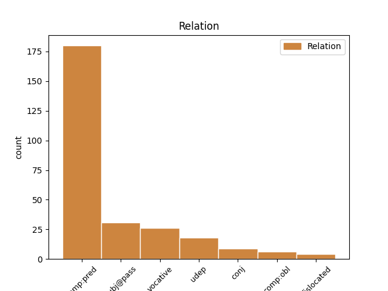
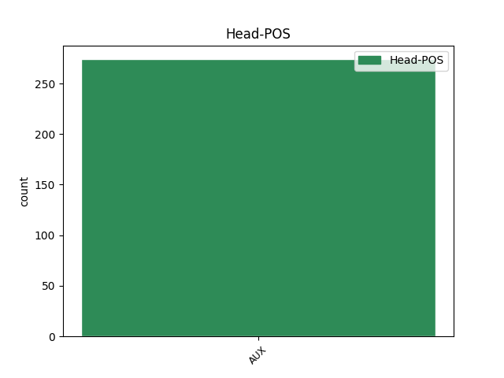
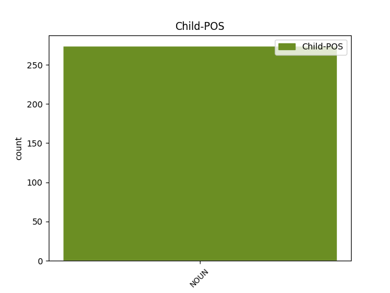

Distribution of features within this leaf



Agreement Rules sorted by frequency.
- When the dependent token is the predicative complements(comp:pred) of the head token, and the head token is AUX and the dependent token is NOUN.
1 она _ _ _ _ 0 _ _ _
2 же _ _ _ _ 0 _ _ _
3 мьнѧшти _ _ _ _ 0 _ _ _
4 ѣко _ _ _ _ 0 _ _ _
5 врътоградарь врьтоградарь NOUN Nb Case=Nom|Gender=Masc|Number=Sing 6 comp:pred _ ref=JOHN_20.15
6 естъ бꙑти AUX V- Mood=Ind|Number=Sing|Person=3|Tense=Pres|VerbForm=Fin|Voice=Act 0 _ _ _
7 рече _ _ _ _ 0 _ _ _
8 емоу _ _ _ _ 0 _ _ _
1 Сѫшти _ _ _ _ 0 _ _ _
2 же _ _ _ _ 0 _ _ _
3 поздѣ _ _ _ _ 0 _ _ _
4 вь _ _ _ _ 0 _ _ _
5 тъ _ _ _ _ 0 _ _ _
6 день _ _ _ _ 0 _ _ _
7 вь _ _ _ _ 0 _ _ _
8 единѫ _ _ _ _ 0 _ _ _
9 соботъ _ _ _ _ 0 _ _ _
10 ꙇ _ _ _ _ 0 _ _ _
11 двьремъ _ _ _ _ 0 _ _ _
12 затвореномъ _ _ _ _ 0 _ _ _
13 ꙇдеже _ _ _ _ 0 _ _ _
14 бѣахѫ бꙑти AUX V- Aspect=Imp|Mood=Ind|Number=Plur|Person=3|Tense=Past|VerbForm=Fin|Voice=Act 0 _ _ _
15 оученици оученикъ NOUN Nb Case=Nom|Gender=Masc|Number=Plur 14 subj@pass _ ref=JOHN_20.19
16 его _ _ _ _ 0 _ _ _
17 събърани _ _ _ _ 0 _ _ _
18 за _ _ _ _ 0 _ _ _
19 страхъ _ _ _ _ 0 _ _ _
20 июдеискъ _ _ _ _ 0 _ _ _
21 приде _ _ _ _ 0 _ _ _
22 и҃съ _ _ _ _ 0 _ _ _
1 г҃и господь NOUN Nb Case=Voc|Gender=Masc|Number=Sing 4 vocative _ ref=JOHN_14.22
2 и _ _ _ _ 0 _ _ _
3 что _ _ _ _ 0 _ _ _
4 бꙑстъ бꙑти AUX V- Aspect=Perf|Mood=Ind|Number=Sing|Person=3|Tense=Past|VerbForm=Fin|Voice=Act 0 _ _ _
5 ѣко _ _ _ _ 0 _ _ _
6 намъ _ _ _ _ 0 _ _ _
7 хоштеши _ _ _ _ 0 _ _ _
8 сѧ _ _ _ _ 0 _ _ _
9 авити _ _ _ _ 0 _ _ _
10 а _ _ _ _ 0 _ _ _
11 не _ _ _ _ 0 _ _ _
12 вьсемоу _ _ _ _ 0 _ _ _
13 мироу _ _ _ _ 0 _ _ _
1 толико _ _ _ _ 0 _ _ _
2 ли _ _ _ _ 0 _ _ _
3 врѣмѧ врѣмѧ NOUN Nb Case=Acc|Gender=Neut|Number=Sing 6 udep _ ref=JOHN_14.9
4 съ _ _ _ _ 0 _ _ _
5 вами _ _ _ _ 0 _ _ _
6 есмъ бꙑти AUX V- Mood=Ind|Number=Sing|Person=1|Tense=Pres|VerbForm=Fin|Voice=Act 0 _ _ _
7 и _ _ _ _ 0 _ _ _
8 не _ _ _ _ 0 _ _ _
9 позна _ _ _ _ 0 _ _ _
10 ли _ _ _ _ 0 _ _ _
11 мене _ _ _ _ 0 _ _ _
1 ꙇ _ _ _ _ 0 _ _ _
2 слово _ _ _ _ 0 _ _ _
3 еже _ _ _ _ 0 _ _ _
4 слꙑшите _ _ _ _ 0 _ _ _
5 нѣстъ не.бꙑти AUX V- Mood=Ind|Number=Sing|Person=3|Tense=Pres|VerbForm=Fin|Voice=Act 0 _ _ _
6 мое _ _ _ _ 0 _ _ _
7 нъ _ _ _ _ 0 _ _ _
8 посълавъшааго _ _ _ _ 0 _ _ _
9 мѧ _ _ _ _ 0 _ _ _
10 о҃тца отьць NOUN Nb Case=Gen|Gender=Masc|Number=Sing 5 conj _ ref=JOHN_14.24
1 сь _ _ _ _ 0 _ _ _
2 бѫдетъ _ _ _ _ 0 _ _ _
3 велии _ _ _ _ 0 _ _ _
4 ꙇ _ _ _ _ 0 _ _ _
5 с҃нъ _ _ _ _ 0 _ _ _
6 вꙑшънѣаго _ _ _ _ 0 _ _ _
7 наречетъ _ _ _ _ 0 _ _ _
8 сѧ _ _ _ _ 0 _ _ _
9 ꙇ _ _ _ _ 0 _ _ _
10 дастъ _ _ _ _ 0 _ _ _
11 емоу _ _ _ _ 0 _ _ _
12 г҃ъ _ _ _ _ 0 _ _ _
13 б҃ъ _ _ _ _ 0 _ _ _
14 прѣстолъ _ _ _ _ 0 _ _ _
15 д҃авда _ _ _ _ 0 _ _ _
16 о҃тца _ _ _ _ 0 _ _ _
17 его _ _ _ _ 0 _ _ _
18 ꙇ _ _ _ _ 0 _ _ _
19 въцѣсаритъ _ _ _ _ 0 _ _ _
20 сѧ _ _ _ _ 0 _ _ _
21 въ _ _ _ _ 0 _ _ _
22 домоу _ _ _ _ 0 _ _ _
23 иѣковли _ _ _ _ 0 _ _ _
24 въ _ _ _ _ 0 _ _ _
25 вѣкꙑ _ _ _ _ 0 _ _ _
26 ꙇ _ _ _ _ 0 _ _ _
27 ц҃срствию цѣсарьствиѥ NOUN Nb Case=Dat|Gender=Neut|Number=Sing 30 comp:obl _ ref=LUKE_1.33
28 его _ _ _ _ 0 _ _ _
29 не _ _ _ _ 0 _ _ _
30 бѫдетъ бꙑти AUX V- Mood=Ind|Number=Sing|Person=3|Tense=Fut|VerbForm=Fin|Voice=Act 0 _ _ _
31 коньца _ _ _ _ 0 _ _ _
1 камень камꙑ NOUN Nb Case=Nom|Gender=Masc|Number=Sing 7 dislocated _ ref=LUKE_20.17
2 егоже _ _ _ _ 0 _ _ _
3 неврѣдоу _ _ _ _ 0 _ _ _
4 сътворишѧ _ _ _ _ 0 _ _ _
5 зиждѫштеи _ _ _ _ 0 _ _ _
6 съ _ _ _ _ 0 _ _ _
7 бꙑстъ бꙑти AUX V- Aspect=Perf|Mood=Ind|Number=Sing|Person=3|Tense=Past|VerbForm=Fin|Voice=Act 0 _ _ _
8 въ _ _ _ _ 0 _ _ _
9 г҃лвѫ _ _ _ _ 0 _ _ _
10 ѫгълоу _ _ _ _ 0 _ _ _
Disagree Examples:
1 ѣко _ _ _ _ 0 _ _ _
2 бо _ _ _ _ 0 _ _ _
3 бѣ бꙑти AUX V- Aspect=Imp|Mood=Ind|Number=Sing|Person=3|Tense=Past|VerbForm=Fin|Voice=Act 0 _ _ _
4 иона _ _ _ _ 0 _ _ _
5 въ _ _ _ _ 0 _ _ _
6 чрѣвѣ _ _ _ _ 0 _ _ _
7 китовѣ _ _ _ _ 0 _ _ _
8 три _ _ _ _ 0 _ _ _
9 дьни дьнь NOUN Nb Case=Acc|Gender=Masc|Number=Plur 3 udep _ ref=MATT_12.40
10 и _ _ _ _ 0 _ _ _
11 три _ _ _ _ 0 _ _ _
12 ношти _ _ _ _ 0 _ _ _
13 тако _ _ _ _ 0 _ _ _
14 бѫдетъ _ _ _ _ 0 _ _ _
15 с҃нъ _ _ _ _ 0 _ _ _
16 ч҃лвскꙑ _ _ _ _ 0 _ _ _
17 въ _ _ _ _ 0 _ _ _
18 с҃рдци _ _ _ _ 0 _ _ _
19 землѧ _ _ _ _ 0 _ _ _
20 три _ _ _ _ 0 _ _ _
21 дни _ _ _ _ 0 _ _ _
22 и _ _ _ _ 0 _ _ _
23 три _ _ _ _ 0 _ _ _
24 ношти _ _ _ _ 0 _ _ _
1 ѣко _ _ _ _ 0 _ _ _
2 бо _ _ _ _ 0 _ _ _
3 бѣ _ _ _ _ 0 _ _ _
4 иона _ _ _ _ 0 _ _ _
5 въ _ _ _ _ 0 _ _ _
6 чрѣвѣ _ _ _ _ 0 _ _ _
7 китовѣ _ _ _ _ 0 _ _ _
8 три _ _ _ _ 0 _ _ _
9 дьни _ _ _ _ 0 _ _ _
10 и _ _ _ _ 0 _ _ _
11 три _ _ _ _ 0 _ _ _
12 ношти _ _ _ _ 0 _ _ _
13 тако _ _ _ _ 0 _ _ _
14 бѫдетъ бꙑти AUX V- Mood=Ind|Number=Sing|Person=3|Tense=Fut|VerbForm=Fin|Voice=Act 0 _ _ _
15 с҃нъ _ _ _ _ 0 _ _ _
16 ч҃лвскꙑ _ _ _ _ 0 _ _ _
17 въ _ _ _ _ 0 _ _ _
18 с҃рдци _ _ _ _ 0 _ _ _
19 землѧ _ _ _ _ 0 _ _ _
20 три _ _ _ _ 0 _ _ _
21 дни дьнь NOUN Nb Case=Acc|Gender=Masc|Number=Plur 14 udep _ ref=MATT_12.40
22 и _ _ _ _ 0 _ _ _
23 три _ _ _ _ 0 _ _ _
24 ношти _ _ _ _ 0 _ _ _
1 къто _ _ _ _ 0 _ _ _
2 естъ _ _ _ _ 0 _ _ _
3 мати _ _ _ _ 0 _ _ _
4 моѣ _ _ _ _ 0 _ _ _
5 и _ _ _ _ 0 _ _ _
6 кто _ _ _ _ 0 _ _ _
7 сѫтъ бꙑти AUX V- Mood=Ind|Number=Plur|Person=3|Tense=Pres|VerbForm=Fin|Voice=Act 0 _ _ _
8 братриѣ братриꙗ NOUN Nb Case=Nom|Gender=Fem|Number=Sing 7 comp:pred _ ref=MATT_12.48
9 моѣ _ _ _ _ 0 _ _ _
1 доброе _ _ _ _ 0 _ _ _
2 же _ _ _ _ 0 _ _ _
3 сѣмѧ сѣмѧ NOUN Nb Case=Nom|Gender=Neut|Number=Sing 5 dislocated _ ref=MATT_13.38
4 се _ _ _ _ 0 _ _ _
5 сѫтъ бꙑти AUX V- Mood=Ind|Number=Plur|Person=3|Tense=Pres|VerbForm=Fin|Voice=Act 0 _ _ _
6 с҃нве _ _ _ _ 0 _ _ _
7 ц҃срствиѣ _ _ _ _ 0 _ _ _
1 тѣмь _ _ _ _ 0 _ _ _
2 же _ _ _ _ 0 _ _ _
3 юже _ _ _ _ 0 _ _ _
4 нѣсте не.бꙑти AUX V- Mood=Ind|Number=Dual|Person=3|Tense=Pres|VerbForm=Fin|Voice=Act 0 _ _ _
5 дъва _ _ _ _ 0 _ _ _
6 нъ _ _ _ _ 0 _ _ _
7 едина _ _ _ _ 0 _ _ _
8 плътъ плъть NOUN Nb Case=Nom|Gender=Fem|Number=Sing 4 conj _ ref=MATT_19.6